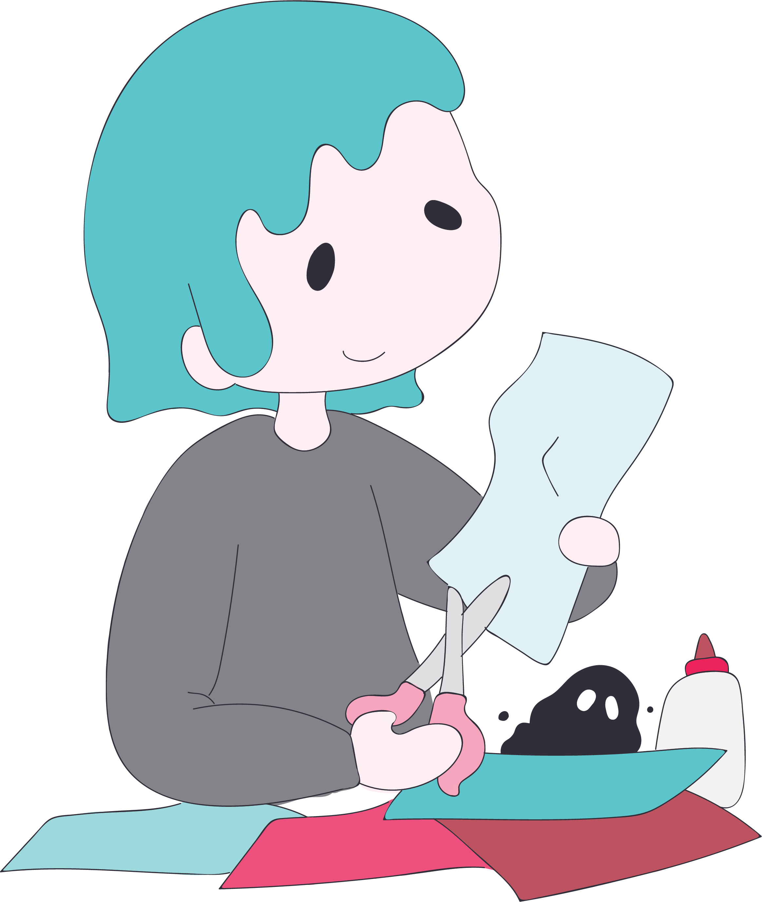

I'll Be Ok
How To Eliminate 90% Of Your Regret And Anxiety By Thinking Like A Roman Emperor
by Raad Ahmed
How To Eliminate 90% Of Your Regret And Anxiety By Thinking Like A Roman Emperor
by Raad Ahmed
Do you know what Steve Jobs, John D. Rockefeller, Amelia Earhart, and Ulysses S. Grant have in common? They each possessed the talent of turning obstacles into opportunities drawn from the Stoic ideologies of Roman Emperor, Marcus Aurelius. While living our lives, it’s very likely that you will run into some pretty distressing events, and at other times it’ll seem like everything is running exactly as it should with very few discomforts.
And arguably, the more interesting and worthwhile a life goal is, the more sacrifice and inconvenience will be required from you up front. Yet we often find ourselves complaining about all the little things that happen to us during this path for greatness. It stems from the false assumption that somehow we can have it all: build that amazing startup and never deal with rejections; live your awesome life and remain unexposed by all of its obstacles.
To achieve greatness, you need to re-program your brain to not think this way — it’s unrealistic and self sabotaging. It won’t help you achieve worthwhile goals since worthwhile goals are almost guaranteed to put you through adversity.
Most importantly, your brain is telling you that you are dominated by circumstance and the decisions of other people, instead of letting it be a force of your own. You start to subconsciously prioritize pleasure over pain, making it really hard to truly start executing on your vision. So the question is not how skilled of an entrepreneur, artist, or writer you are, but can you keep it steady and focus only on what you can change, no matter how much external events may fluctuate?
Part 1: Develop the Skill of Eudaimonia Keeping your irrational emotions in check during tribulations is not easy to develop since your brain is always telling you to react the way it’s been conditioned to. But it’s a skill that can be cultivated so you can focus your energy on solving problems, rather than reacting to them. It’s the key to making your life successful all on your own. The Greeks refer to this state as Eudaimonia, which is defined as a contented state of happiness. In a more literal sense, eudaimonia means to have a good indwelling spirit to make the right actions.
Unfortunately, today we associate ‘happiness’ as a subjective feeling rather than an objective state that characterizes a well-lived life irrespective of the emotional state we experience.
Realize that it isn’t outside influence that make us feel something, it’s our inner thoughts that create our feelings (which often stress us out). When this happens, we point the finger at external events, but all that does is create more conflicts in our minds. When we avoid the reality of an uncomfortable situation — meeting a deadline, boss’s urgent email — we weaken our self-disciple and harm ourselves. Another way of applying this principle is asking yourself: Does getting upset or panicking provide you with better options? Sometimes it does, but more often it does not.
If an emotion can’t change the situation you’re in, it’s likely a destructive one. I’m not saying to stop feeling everything. If you need to take a moment, go right ahead and feel it. But be prepared to tackle emotions with logic because with enough logical questions and statements you’ll get to the causes, which are much easier to comprehend.
“Today I escaped anxiety. Or no, I discarded it, because it was within me, in my own perceptions — not outside.” — Marcus Aurelius Part 2: Fear nothing Fear can only enter the mind if you want it to. If you choose not to be afraid then fear will simply vanish. Premeditatio Malorum is the technique of overcoming problems by vividly imagining what it would be like to face those misfortunes in order to practice gratitude and prepare for the worst. Here’s some of mine: I imagine losing my startup. We don’t close our next round of funding.
Our main customer acquisition channel fizzes out. My co-founder leaves the company. Everyday when I call my girlfriend, I feel in that moment that it could be the last time I ever speak with her. It keeps my appreciation fresh and strengthens our relationship. A good one by Steve Jobs is reminding myself that I’ll be dead soon. It could be tomorrow or in another 80 years, but nothing helps me focus more than thinking about death. “Remembering that I’ll be dead soon is the most important tool I’ve ever encountered to help me make the big choices in life.” — Steve Jobs
Part 3: Use Pain As Your Teacher Just as physical pain is caused by a bodily injuries and sickness, mental distress is caused by the wrong belief system and incorrect judgements. But living with pain could help us develop endurance and inner calm instead of mentally destructive passions. Remember, emotional reactions are natural — it’s how you respond to them that’s important. Marcus Aurelius describes pain as something that is neither good nor evil. It’s something that hurts without discrimination, but like everything else in life, it will end eventually. The Negative Visualization Exercise
Here’s a practical exercise I learned from Tim Ferris to accomplish big goals by defining your pains: Take an 8 x 11 paper and make three columns. On the top write something big you want to accomplish (quit your job and start a startup, move to Bali, write a fiction novel, whatever). On the first column write the worst possible things that could happen if you made that decision. On the next column, write how you could minimize all of that from happening.
On the last one, write how you could get back to where you were originally. Like getting back to the industry you left to start your own business. I did this when I decided to start LawTrades and not work for a firm straight out of law school. On a scale of 1 to 10 I assigned a pain level of about 3 (I could always work at a law firm if it didn’t pan out) and a life changing score of 10 (wake up everyday loving what I do). “Named must your fear be before banish it you can” — Yoda
Part 4: Respond, Not React Don’t react to the world. You may respond but not react. A response is an action taken based on logic. A reaction is an impulse based on an emotional state. Your reaction will not alter the world. Your reaction only changes you. Your response is what will change the world.

The Cheat Sheet All is temporary Do everything as if it were the last thing you do in your life Have nothing you are not prepared to lose Accept what can’t be changed Refuse to be a victim Practice misfortune Negative visualization Don’t let emotions override what your mind tells you